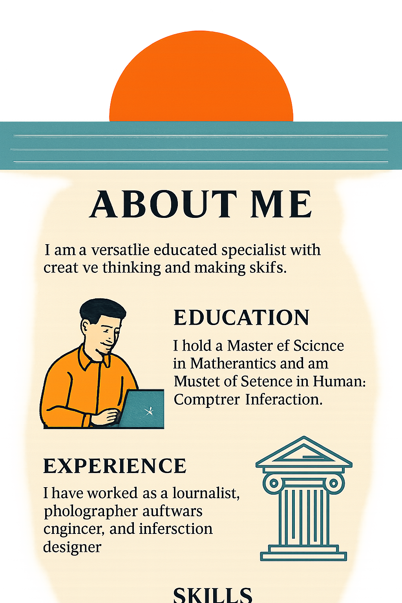

About Me
I'm a versatile and highly educated software engineer with 18 years of experience in large-scale commercial projects
and nearly 3 years as a technical lead.
Education
Odesa National I.I. Mechnikov University
Odesa State Environmental University
Udemy Certifications:
Experience
- The Product Engine — Senior Software Engineer (2007–2025)
- Xperi/TiVo — Team Lead, Video Streaming Platforms (2014–2025)
- HPE Aruba Networks — Wireless Access Management (2010–2014)
- Kwedit, LifeWare, BIZ360 — Finance & Web Systems(2007–2010)
Skills
- Java (Spring, Spring Cloud, JPA, MVC, AI, Hibernate), Kotlin
- JavaScript/TypeScript (React.js, Next.js, Node.js, jQuery)
- HTML, CSS, Tailwind, SASS
- SQL, PostgreSQL, MySQL
- CI/CD: Git, Jenkins, GitLab
- Microservices: Docker, Docker Compose, Kafka
- AI/LLM: Prompt writing, code generation, integration
- Other: OOP, MVC, MVT, XML, JSON, YAML, Python, Bash, Linux, Android
- REST API, TCP/IP, HTTP, Unit Testing, Splunk, CodeCollab, Confluence, Jira, Agile, Scrum
Achievements & Responsibilities
- Designed and implemented architectural and functional components for scalable systems
- Developed object behavior and logic for complex, multi-layered applications
- Refactored and optimized codebases for performance, memory efficiency, and maintainability
- Migrated legacy functionality to modern, modular architectures
- Built fault-tolerant systems and resilient microservice components
- Diagnosed and resolved critical bugs across production environments
- Developed user interfaces in close collaboration with UX and design teams
- Gained experience in developing applications from scratch, including designing system architecture and database schemas
- Coordinated cross-functional team efforts and facilitated interdepartmental collaboration
- Created, assigned, and tracked tasks to ensure timely and efficient delivery
- Conducted code reviews and enforced adherence to quality and security standards